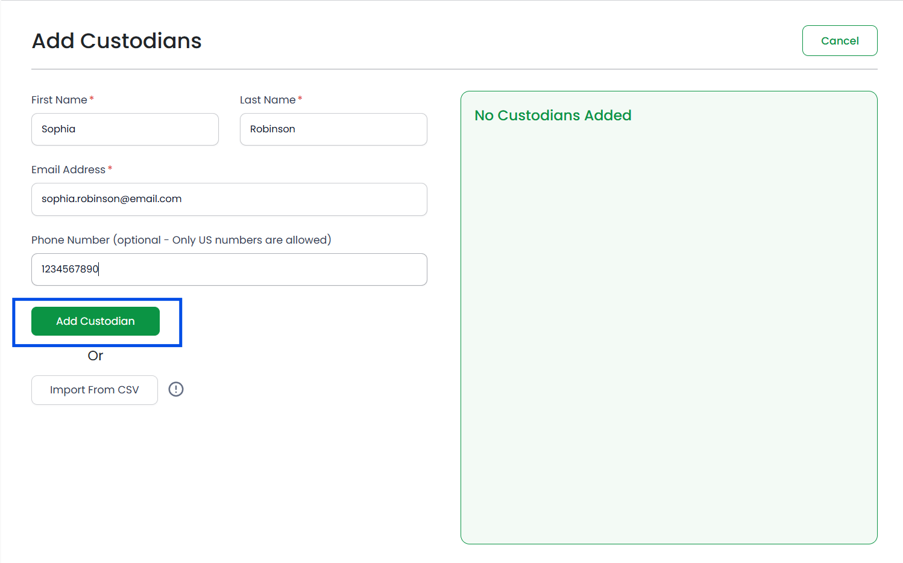

) next to each custodian.
) next to each custodian. Once you have completed adding the custodians, click on the Finish button in the top right corner.
Custodians are the users who will upload files to the project. So for each
project, you will have to add custodians who will have access to add files
to your project.
To add custodians to a project, open the project
details by clicking on the View button. Click on the
Add Custodians button in the detail view.
You can add custodians one by one by filling in the information on the
portal, or add in bulk by importing a CSV file.
To add custodians
one by one, fill in the required fields:
Once you have filled in the details correctly, the Add Custodian button will become active. Click on it to add your custodian.
The newly added custodian will appear on the right side of the screen.

To delete a custodian, click on the red delete button () next to each custodian.
Once you have completed adding the
custodians, click on the Finish button in the top right corner.